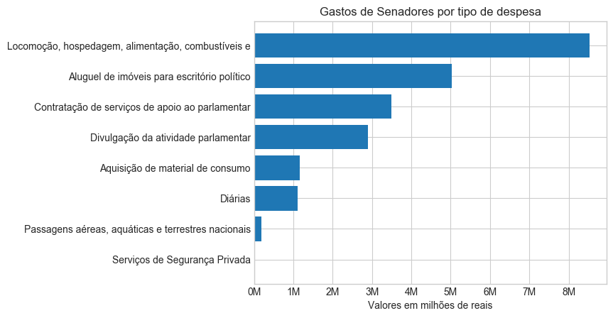
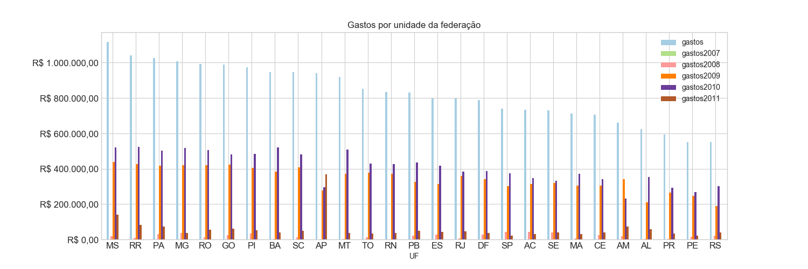
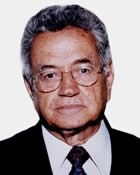
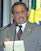
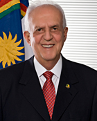
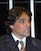

BRASIL - 53ª Legislatura
Informações de despesas de senadores
Dados coletados em
16/06/2018 às
14:31:50
Os 15 senadores com maiores despesas gastaram cerca de R$ 200.000,00 no último ano desta legislatura.
Os maiores gastos registrados foram os relativos a locomoção, hospedagem, alimentação e combustíveis.


 podem ser reordenadas com um clique. As despesas de um senador são detalhadas quando se passa o mouse sobre o montante.
podem ser reordenadas com um clique. As despesas de um senador são detalhadas quando se passa o mouse sobre o montante.| Nº | Foto | Nome |
Despesas no Mandato |
Participação |
UF |
Partido |
Escritório e Gabinete |
Benefício Moradia |
|---|---|---|---|---|---|---|---|---|
| 1 | Acir Gurgacz | R$ 223.441,17 | Titular | RO | PDT | 37 pessoas | 0 meses | |
| 2 | Ada Mello | R$ 0,00 | 2º Suplente | AL | PTB | 0 pessoas | 0 meses | |
| 3 | Crédito foto: A definir | Adelmir Santana | R$ 361.860,23 | 1º Suplente | DF | DEM | 0 pessoas | 0 meses |
| 4 | Crédito foto: A definir | Alfredo Cotait | R$ 54.581,16 | 1º Suplente | SP | DEM | 0 pessoas | 0 meses |
| 5 | Alfredo Nascimento | R$ 16.291,18 | Titular | AM | PR | 25 pessoas | 0 meses | |
| 6 | Crédito foto: A definir | Almeida Lima | R$ 330.543,15 | Titular | SE | MDB | 0 pessoas | 0 meses |
| 7 | Crédito foto: A definir | Aloizio Mercadante | R$ 242.824,82 | Titular | SP | PT | 0 pessoas | 0 meses |
| 8 | Alvaro Dias | R$ 6.402,28 | Titular | PR | PODE | 30 pessoas | 0 meses | |
| 9 | Crédito foto: A definir | Ana Júlia Carepa | R$ 0,00 | Titular | PA | PT | 0 pessoas | 0 meses |
| 10 | Ana Rita | R$ 20.823,16 | 1º Suplente | ES | PT | 29 pessoas | 0 meses | |
| 11 | Crédito foto: A definir | Anibal Diniz | R$ 22.834,77 | 1º Suplente | AC | PT | 44 pessoas | 0 meses |
| 12 | Antonio Aureliano | R$ 0,00 | 2º Suplente | MG | PSDB | 0 pessoas | 0 meses | |
| 13 | Crédito foto: A definir | Antonio Carlos Júnior | R$ 332.218,86 | 1º Suplente | BA | DEM | 0 pessoas | 0 meses |
| 14 | Crédito foto: A definir | Antonio Carlos Magalhães | R$ 0,00 | Titular | BA | S/Partido | 0 pessoas | 0 meses |
| 15 | Antonio Carlos Valadares | R$ 248.864,49 | Titular | SE | PSB | 39 pessoas | 0 meses | |
| 16 | Crédito foto: A definir | Antonio João | R$ 0,00 | 1º Suplente | MS | PTB | 0 pessoas | 0 meses |
| 17 | Antonio Russo | R$ 12.959,94 | 1º Suplente | MS | PR | 27 pessoas | 0 meses | |
| 18 | Crédito foto: A definir | Arthur Virgílio | R$ 255.253,60 | Titular | AM | PSDB | 0 pessoas | 0 meses |
| 19 | Assis Gurgacz | R$ 0,00 | 1º Suplente | RO | PDT | 0 pessoas | 0 meses | |
| 20 | Crédito foto: A definir | Augusto Botelho | R$ 344.694,49 | Titular | RR | S/Partido | 0 pessoas | 0 meses |
| 21 | Crédito foto: A definir | Belini Meurer | R$ 24.180,20 | 1º Suplente | SC | PT | 0 pessoas | 0 meses |
| 22 | Crédito foto: A definir | Carlos Dunga | R$ 0,00 | 1º Suplente | PB | PTB | 0 pessoas | 0 meses |
| 23 | Casildo Maldaner | R$ 21.960,78 | 1º Suplente | SC | MDB | 32 pessoas | 0 meses | |
| 24 | Crédito foto: A definir | César Borges | R$ 313.414,52 | Titular | BA | PR | 0 pessoas | 0 meses |
| 25 | Cícero Lucena | R$ 376.613,05 | Titular | PB | PSDB | 40 pessoas | 0 meses | |
| 26 | Clésio Andrade | R$ 8.340,44 | 1º Suplente | MG | MDB | 34 pessoas | 0 meses | |
| 27 | Cristovam Buarque | R$ 107.138,89 | Titular | DF | PPS | 24 pessoas | 0 meses | |
| 28 | Crédito foto: A definir | Cyro Miranda | R$ 20.041,60 | 1º Suplente | GO | PSDB | 32 pessoas | 0 meses |
| 29 | Crédito foto: A definir | Danimar Cristina | R$ 14.649,61 | 1º Suplente | PR | PR | 0 pessoas | 0 meses |
| 30 | Delcídio do Amaral | R$ 306.512,25 | Titular | MS | S/Partido | 30 pessoas | 0 meses | |
| 31 | Crédito foto: Cléber Medeiros/Supres | Demóstenes Torres | R$ 364.145,20 | Titular | GO | S/Partido | 0 pessoas | 0 meses |
| 32 | Crédito foto: A definir | Duciomar Costa | R$ 0,00 | Titular | PA | PTB | 0 pessoas | 0 meses |
| 33 | Edison Lobão | R$ 0,00 | Titular | MA | MDB | 0 pessoas | 0 meses | |
| 34 | Crédito foto: A definir | Eduardo Azeredo | R$ 398.692,20 | Titular | MG | PSDB | 0 pessoas | 0 meses |
| 35 | Crédito foto: A definir | Eduardo Suplicy | R$ 107.955,51 | Titular | SP | PT | 18 pessoas | 0 meses |
| 36 | Crédito foto: A definir | Efraim Morais | R$ 347.365,36 | Titular | PB | DEM | 0 pessoas | 0 meses |
| 37 | Crédito foto: A definir | Eliseu Resende | R$ 319.290,51 | Titular | MG | DEM | 0 pessoas | 0 meses |
| 38 | Crédito foto: A definir | Epitácio Cafeteira | R$ 289.848,40 | Titular | MA | PTB | 43 pessoas | 0 meses |
| 39 | Euclydes Mello | R$ 0,00 | 1º Suplente | AL | PRB | 0 pessoas | 0 meses | |
| 40 | Crédito foto: A definir | Eurípedes Camargo | R$ 0,00 | 1º Suplente | DF | PT | 0 pessoas | 0 meses |
| 41 | Crédito foto: A definir | Expedito Júnior | R$ 117.286,00 | Titular | RO | PSDB | 0 pessoas | 0 meses |
| 42 | Crédito foto: A definir | Fátima Cleide | R$ 284.291,02 | Titular | RO | PT | 0 pessoas | 0 meses |
| 43 | Crédito foto: Senado Federal | Fernando Collor | R$ 348.257,56 | Titular | AL | PTC | 56 pessoas | 0 meses |
| 44 | Crédito foto: A definir | Flávio Arns | R$ 309.505,97 | Titular | PR | PSDB | 0 pessoas | 0 meses |
| 45 | Crédito foto: A definir | Flávio Torres | R$ 48.002,54 | 1º Suplente | CE | PDT | 0 pessoas | 0 meses |
| 46 | Flexa Ribeiro | R$ 314.326,48 | 1º Suplente | PA | PSDB | 31 pessoas | 0 meses | |
| 47 | Francisco Dornelles | R$ 343.175,72 | Titular | RJ | PP | 32 pessoas | 0 meses | |
| 48 | Crédito foto: A definir | Francisco Pereira | R$ 0,00 | 1º Suplente | ES | S/Partido | 0 pessoas | 0 meses |
| 49 | Garibaldi Alves | R$ 5.460,85 | 1º Suplente | RN | MDB | 0 pessoas | 0 meses | |
| 50 | Garibaldi Alves Filho | R$ 267.207,74 | Titular | RN | MDB | 0 pessoas | 0 meses | |
| 51 | Crédito foto: Senado Federal | Geovani Borges | R$ 375.031,42 | 1º Suplente | AP | MDB | 0 pessoas | 0 meses |
| 52 | Crédito foto: A definir | Geraldo Mesquita Júnior | R$ 324.219,96 | Titular | AC | MDB | 0 pessoas | 0 meses |
| 53 | Gerson Camata | R$ 201.825,51 | Titular | ES | MDB | 0 pessoas | 0 meses | |
| 54 | Gilberto Goellner | R$ 262.617,35 | 1º Suplente | MT | DEM | 0 pessoas | 0 meses | |
| 55 | Crédito foto: Cléber Medeiros/Supres | Gilvam Borges | R$ 299.730,00 | Titular | AP | MDB | 0 pessoas | 0 meses |
| 56 | Crédito foto: A definir | Hélio Costa | R$ 101.060,90 | Titular | MG | MDB | 0 pessoas | 0 meses |
| 57 | Crédito foto: A definir | Heráclito Fortes | R$ 316.739,94 | Titular | PI | DEM | 0 pessoas | 0 meses |
| 58 | Crédito foto: A definir | Ideli Salvatti | R$ 279.509,93 | Titular | SC | PT | 0 pessoas | 0 meses |
| 59 | Crédito foto: A definir | Ildon Marques | R$ 0,00 | 2º Suplente | MA | PSB | 0 pessoas | 0 meses |
| 60 | Crédito foto: A definir | Inácio Arruda | R$ 376.229,14 | Titular | CE | PCdoB | 28 pessoas | 0 meses |
| 61 | Ivonete Dantas | R$ 927,77 | 2º Suplente | RN | MDB | 34 pessoas | 0 meses | |
| 62 | Crédito foto: A definir | Jarbas Vasconcelos | R$ 319.627,42 | Titular | PE | MDB | 32 pessoas | 0 meses |
| 63 | Jayme Campos | R$ 271.728,74 | Titular | MT | DEM | 36 pessoas | 0 meses | |
| 64 | Crédito foto: A definir | Jefferson Peres | R$ 0,00 | Titular | AM | S/Partido | 0 pessoas | 0 meses |
| 65 | Crédito foto: A definir | Jefferson Praia | R$ 169.467,72 | 1º Suplente | AM | PDT | 0 pessoas | 0 meses |
| 66 | Crédito foto: Rodrigo Viana/Supres | João Capiberibe | R$ 2.992,56 | Titular | AP | PSB | 16 pessoas | 0 meses |
| 67 | João Durval | R$ 301.010,94 | Titular | BA | PDT | 35 pessoas | 0 meses | |
| 68 | Crédito foto: A definir | João Faustino | R$ 46.332,39 | 1º Suplente | RN | PSDB | 0 pessoas | 0 meses |
| 69 | João Pedro | R$ 219.797,12 | 1º Suplente | AM | PT | 0 pessoas | 0 meses | |
| 70 | João Ribeiro | R$ 352.851,48 | Titular | TO | PR | 59 pessoas | 0 meses | |
| 71 | Crédito foto: A definir | João Tenório | R$ 77.414,64 | 1º Suplente | AL | PSDB | 0 pessoas | 0 meses |
| 72 | João Vicente Claudino | R$ 316.585,49 | Titular | PI | PTB | 42 pessoas | 0 meses | |
| 73 | Crédito foto: A definir | Joaquim Roriz | R$ 0,00 | Titular | DF | MDB | 0 pessoas | 0 meses |
| 74 | Crédito foto: A definir | Jonas Pinheiro | R$ 0,00 | Titular | MT | S/Partido | 0 pessoas | 0 meses |
| 75 | Crédito foto: A definir | Jorge Afonso Argello | R$ 319.694,31 | 1º Suplente | DF | PTB | 55 pessoas | 0 meses |
| 76 | Crédito foto: A definir | Jorge Yanai | R$ 59.737,47 | 2º Suplente | MT | DEM | 0 pessoas | 0 meses |
| 77 | Crédito foto: Cléber Medeiros/Supres | José Agripino | R$ 183.016,91 | Titular | RN | DEM | 36 pessoas | 0 meses |
| 78 | Crédito foto: A definir | José Bezerra | R$ 57.240,50 | 1º Suplente | RN | DEM | 0 pessoas | 0 meses |
| 79 | José Maranhão | R$ 0,00 | Titular | PB | MDB | 0 pessoas | 0 meses | |
| 80 | Crédito foto: A definir | José Nery | R$ 383.084,95 | 1º Suplente | PA | PSOL | 0 pessoas | 0 meses |
| 81 | José Sarney | R$ 67.100,00 | Titular | AP | MDB | 36 pessoas | 0 meses | |
| 82 | Kátia Abreu | R$ 304.519,63 | Titular | TO | PDT | 29 pessoas | 0 meses | |
| 83 | Crédito foto: A definir | Leomar Quintanilha | R$ 101.163,72 | Titular | TO | MDB | 0 pessoas | 0 meses |
| 84 | Crédito foto: A definir | Leonel Pavan | R$ 0,00 | Titular | SC | PSDB | 0 pessoas | 0 meses |
| 85 | Crédito foto: Senado Federal | Lobão Filho | R$ 183.466,27 | 1º Suplente | MA | MDB | 42 pessoas | 0 meses |
| 86 | Lúcia Vânia | R$ 299.760,36 | Titular | GO | PSB | 31 pessoas | 0 meses | |
| 87 | Luiz Carlos | R$ 13.326,10 | 2º Suplente | SC | PT | 0 pessoas | 0 meses | |
| 88 | Magno Malta | R$ 283.209,59 | Titular | ES | PR | 39 pessoas | 0 meses | |
| 89 | Crédito foto: A definir | Mão Santa | R$ 340.429,83 | Titular | PI | PSC | 0 pessoas | 0 meses |
| 90 | Marcelo Crivella | R$ 294.514,72 | Titular | RJ | PRB | 43 pessoas | 0 meses | |
| 91 | Crédito foto: A definir | Marco Antonio | R$ 6.402,24 | 1º Suplente | TO | PSL | 0 pessoas | 0 meses |
| 92 | Crédito foto: A definir | Marco Maciel | R$ 1.885,02 | Titular | PE | DEM | 0 pessoas | 0 meses |
| 93 | Crédito foto: A definir | Marconi Perillo | R$ 304.732,87 | Titular | GO | PSDB | 0 pessoas | 0 meses |
| 94 | Crédito foto: A definir | Marcos Guerra | R$ 0,00 | 1º Suplente | ES | PSDB | 0 pessoas | 0 meses |
| 95 | Maria do Carmo Alves | R$ 125.370,61 | Titular | SE | DEM | 34 pessoas | 0 meses | |
| 96 | Crédito foto: A definir | Marina Silva | R$ 109.191,08 | Titular | AC | PV | 0 pessoas | 0 meses |
| 97 | Mário Couto | R$ 327.021,83 | Titular | PA | PSDB | 35 pessoas | 0 meses | |
| 98 | Crédito foto: A definir | Marisa Serrano | R$ 464.834,04 | Titular | MS | PSDB | 0 pessoas | 0 meses |
| 99 | Crédito foto: A definir | Mauro Fecury | R$ 222.952,39 | 1º Suplente | MA | MDB | 0 pessoas | 0 meses |
| 100 | Crédito foto: A definir | Mozarildo Cavalcanti | R$ 368.702,54 | Titular | RR | PTB | 49 pessoas | 0 meses |
| 101 | Crédito foto: A definir | Neuto de Conto | R$ 303.309,32 | 1º Suplente | SC | MDB | 0 pessoas | 0 meses |
| 102 | Crédito foto: A definir | Nezinho Alencar | R$ 0,00 | 1º Suplente | TO | PSB | 0 pessoas | 0 meses |
| 103 | Crédito foto: A definir | Níura Demarchi | R$ 29.131,79 | 2º Suplente | SC | PSDB | 0 pessoas | 0 meses |
| 104 | Crédito foto: A definir | Osmar Dias | R$ 261.853,16 | Titular | PR | PDT | 0 pessoas | 0 meses |
| 105 | Osvaldo Sobrinho | R$ 32.161,36 | 2º Suplente | MT | PTB | 0 pessoas | 0 meses | |
| 106 | Crédito foto: A definir | Papaléo Paes | R$ 196.652,00 | Titular | AP | PSDB | 0 pessoas | 0 meses |
| 107 | Crédito foto: A definir | Patrícia Saboya | R$ 231.185,98 | Titular | CE | PDT | 0 pessoas | 0 meses |
| 108 | Crédito foto: A definir | Paulo Duque | R$ 158.980,55 | 2º Suplente | RJ | MDB | 0 pessoas | 0 meses |
| 109 | Crédito foto: A definir | Paulo Octávio | R$ 0,00 | Titular | DF | S/Partido | 0 pessoas | 0 meses |
| 110 | Paulo Paim | R$ 311.513,25 | Titular | RS | PT | 38 pessoas | 0 meses | |
| 111 | Pedro Simon | R$ 20.535,20 | Titular | RS | MDB | 18 pessoas | 0 meses | |
| 112 | Pericles Olivier | R$ 0,00 | 1º Suplente | RJ | PP | 0 pessoas | 0 meses | |
| 113 | Raimundo Colombo | R$ 244.398,93 | Titular | SC | DEM | 0 pessoas | 0 meses | |
| 114 | Crédito foto: A definir | Ramez Tebet | R$ 0,00 | Titular | MS | S/Partido | 0 pessoas | 0 meses |
| 115 | Crédito foto: A definir | Regis Fichtner | R$ 0,00 | 1º Suplente | RJ | MDB | 0 pessoas | 0 meses |
| 116 | Remi Ribeiro | R$ 0,00 | 2º Suplente | MA | MDB | 0 pessoas | 0 meses | |
| 117 | Renan Calheiros | R$ 197.401,43 | Titular | AL | MDB | 39 pessoas | 0 meses | |
| 118 | Crédito foto: A definir | Renato Casagrande | R$ 292.639,39 | Titular | ES | PSB | 0 pessoas | 0 meses |
| 119 | Crédito foto: A definir | Roberto Cavalcanti | R$ 108.357,92 | 1º Suplente | PB | PRB | 0 pessoas | 0 meses |
| 120 | Crédito foto: Cléber Medeiros/Supres | Romero Jucá | R$ 326.501,71 | Titular | RR | MDB | 25 pessoas | 0 meses |
| 121 | Crédito foto: A definir | Romeu Tuma | R$ 333.039,12 | Titular | SP | PTB | 0 pessoas | 0 meses |
| 122 | Rosalba Ciarlini | R$ 275.126,52 | Titular | RN | DEM | 0 pessoas | 0 meses | |
| 123 | Roseana Sarney | R$ 16.493,76 | Titular | MA | MDB | 0 pessoas | 0 meses | |
| 124 | Crédito foto: A definir | Ruben Figueiró | R$ 0,00 | 2º Suplente | MS | PSDB | 0 pessoas | 0 meses |
| 125 | Crédito foto: A definir | Sadi Cassol | R$ 87.503,83 | 1º Suplente | TO | PT | 0 pessoas | 0 meses |
| 126 | Crédito foto: A definir | Selma Elias | R$ 30.000,00 | 2º Suplente | SC | MDB | 0 pessoas | 0 meses |
| 127 | Sérgio Cabral | R$ 0,00 | Titular | RJ | MDB | 0 pessoas | 0 meses | |
| 128 | Crédito foto: A definir | Sergio Guerra | R$ 230.551,79 | Titular | PE | PSDB | 0 pessoas | 0 meses |
| 129 | Crédito foto: A definir | Sérgio Zambiasi | R$ 218.059,86 | Titular | RS | PTB | 0 pessoas | 0 meses |
| 130 | Crédito foto: A definir | Serys Slhessarenko | R$ 292.976,45 | Titular | MT | PT | 0 pessoas | 0 meses |
| 131 | Crédito foto: A definir | Sibá Machado | R$ 10.433,76 | 1º Suplente | AC | PT | 0 pessoas | 0 meses |
| 132 | Sodré Santoro | R$ 0,00 | 1º Suplente | RR | PTB | 0 pessoas | 0 meses | |
| 133 | Crédito foto: Senado Federal | Tasso Jereissati | R$ 50.485,00 | Titular | CE | PSDB | 0 pessoas | 0 meses |
| 134 | Crédito foto: A definir | Teotonio Vilela Filho | R$ 0,00 | Titular | AL | PSDB | 0 pessoas | 0 meses |
| 135 | Tião Viana | R$ 267.783,87 | Titular | AC | PT | 0 pessoas | 0 meses | |
| 136 | Valdir Raupp | R$ 367.539,33 | Titular | RO | MDB | 59 pessoas | 0 meses | |
| 137 | Crédito foto: A definir | Valter Pereira | R$ 331.590,94 | 1º Suplente | MS | MDB | 0 pessoas | 0 meses |
| 138 | Virginio de Carvalho | R$ 24.583,52 | 1º Suplente | SE | PSC | 0 pessoas | 0 meses | |
| 139 | Crédito foto: A definir | Wellington Salgado | R$ 180.553,96 | 1º Suplente | MG | MDB | 0 pessoas | 0 meses |
| 140 | Crédito foto: A definir | Wilson Matos | R$ 0,00 | 1º Suplente | PR | PSDB | 0 pessoas | 0 meses |
| 141 | Wirlande da Luz | R$ 0,00 | 1º Suplente | RR | MDB | 0 pessoas | 0 meses |